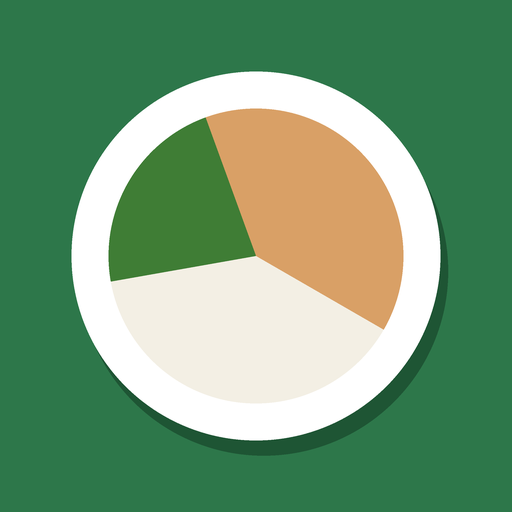

<!doctype html>
<html lang="fr">
<head>
<meta charset="utf-8">
<title>Vite & Calé : vidéos</title>
<!-- Vidéos verticales 1080 × 1920 pour TikTok, Reels et Shorts.
     ?v=1 à 16 choisit la vidéo. window.seek(ms) place l'animation à un instant donné :
     rendu.js s'en sert pour prendre les images une par une. Sans rendu.js, la page se joue en boucle. -->
<style>
@font-face{font-family:"Bricolage";src:url(fonts/bricolage-800.woff2) format("woff2");font-weight:800}
@font-face{font-family:"Figtree";src:url(fonts/figtree.woff2) format("woff2");font-weight:300 900}
:root{--bg:#F1F4EC;--ink:#1B251E;--leaf:#2D774A;--leaf-soft:#E2EEE4;--squash:#B8650F;--squash-soft:#F7EAD9;--muted:#5A685F}
*{box-sizing:border-box;margin:0}
html,body{width:1080px;height:1920px;overflow:hidden;background:var(--leaf)}
body{font-family:"Figtree",sans-serif;color:var(--ink);position:relative}
.scene{position:absolute;inset:0;opacity:0;display:flex;flex-direction:column;align-items:center;justify-content:center;
  /* zones gardées libres pour les boutons de TikTok : haut 220, bas 400, droite 150 */
  padding:220px 150px 400px 80px;text-align:center}
.vert{background:var(--leaf);color:#fff}
.clair{background:var(--bg)}
.sombre{background:var(--ink);color:#fff}
h1{font:800 132px/1.02 "Bricolage",sans-serif;letter-spacing:-.02em;text-wrap:balance}
h2{font:800 92px/1.05 "Bricolage",sans-serif;letter-spacing:-.02em;text-wrap:balance}
.sur{font:700 36px/1.2 "Figtree";letter-spacing:.08em;text-transform:uppercase;opacity:.8;margin-bottom:36px}
.sous{font:500 50px/1.3 "Figtree";margin-top:40px;text-wrap:balance}
.mot{display:inline-block;opacity:0;animation:mot .45s cubic-bezier(.2,1.4,.4,1) both}
.jaune{color:#FFD98A}
.orange{color:var(--squash)}
.vertt{color:var(--leaf)}
@keyframes mot{from{opacity:0;transform:translateY(60px) scale(.85)}to{opacity:1;transform:none}}
@keyframes entre{from{opacity:0}to{opacity:1}}
@keyframes sort{to{opacity:0}}
@keyframes monte{from{opacity:0;transform:translateY(420px) rotate(4deg)}to{opacity:1;transform:none}}
@keyframes pop{from{opacity:0;transform:scale(.4)}to{opacity:1;transform:scale(1)}}
@keyframes glisse{from{transform:translateY(0)}to{transform:translateY(var(--dy,-260px))}}
@keyframes barre{from{transform:scaleX(0)}to{transform:scaleX(1)}}
@keyframes bat{0%,100%{transform:scale(1)}50%{transform:scale(1.06)}}

/* téléphone */
.tel{width:600px;height:1140px;border-radius:64px;background:#101512;padding:16px;box-shadow:0 40px 90px rgba(0,0,0,.35);
  opacity:0;animation:monte .8s cubic-bezier(.2,.9,.3,1) both;flex:none;position:relative}
.tel .ecran{width:100%;height:100%;border-radius:50px;overflow:hidden;background:var(--bg)}
.tel img{width:100%;display:block;animation:glisse 3.2s ease-in-out both}
.avec-tel{justify-content:flex-start;padding-top:230px}
.avec-tel h2{font-size:76px;margin-bottom:44px}
.puce{position:absolute;background:#fff;color:var(--ink);font:700 40px/1.15 "Figtree";padding:22px 30px;border-radius:28px;
  box-shadow:0 14px 40px rgba(0,0,0,.25);opacity:0;animation:pop .45s cubic-bezier(.2,1.5,.4,1) both;text-align:left;white-space:nowrap}
.puce b{font:800 56px/1 "Bricolage";display:block;color:var(--squash)}
.puce.v b{color:var(--leaf)}

/* gros chiffre */
.chiffre{font:800 250px/1 "Bricolage";letter-spacing:-.03em;color:var(--squash);white-space:nowrap}
.trait{width:520px;height:14px;border-radius:7px;background:var(--leaf);margin:44px 0 0;transform-origin:left;animation:barre .7s ease-out both}
.liste{margin-top:56px;display:grid;gap:26px;text-align:left}
.liste div{font:600 50px/1.2 "Figtree";opacity:0;animation:mot .45s cubic-bezier(.2,1.4,.4,1) both;display:flex;gap:24px;align-items:center}
.liste i{flex:none;width:68px;height:68px;border-radius:50%;background:var(--leaf);color:#fff;font:800 40px/68px "Bricolage";text-align:center;font-style:normal}
.note{position:absolute;left:80px;right:150px;bottom:420px;font:500 30px/1.3 "Figtree";opacity:.6}

/* fin */
.logo{width:260px;height:260px;border-radius:58px;box-shadow:0 24px 60px rgba(0,0,0,.3);opacity:0;animation:pop .6s cubic-bezier(.2,1.5,.4,1) both}
.nom{font:800 128px/1 "Bricolage";letter-spacing:-.02em;margin-top:48px}
.nom .et .mot{color:#8FDCAE}
.bouton{margin-top:60px;background:#fff;color:var(--leaf);font:800 60px/1 "Bricolage";padding:36px 60px;border-radius:999px;
  opacity:0;animation:pop .5s cubic-bezier(.2,1.5,.4,1) both, bat 1.2s ease-in-out infinite}

/* ronds qui dérivent doucement derrière le texte */
.rond{position:absolute;border-radius:50%;background:rgba(255,255,255,.07);animation:derive 9s ease-in-out infinite alternate}
.clair .rond{background:rgba(45,119,74,.07)}
.scene>*:not(.rond){position:relative}
.scene>.puce,.scene>.note{position:absolute}
@keyframes derive{from{transform:translate(0,0) scale(1)}to{transform:translate(var(--rx,80px),var(--ry,-120px)) scale(1.15)}}
.vert .liste i{background:#fff;color:var(--leaf)}
.sombre .liste i{background:#6DC290;color:var(--ink)}
.sombre .chiffre,.vert .chiffre{color:#FFD98A}
.chiffre small{font-size:.48em}
.liste.petit div{font-size:46px}
</style>
</head>
<body>
<script>
const V = new URLSearchParams(location.search).get("v") || "1";
const NOTE = "Exemple de semaine pour 2 dans l'appli, prix relevés en magasin (Open Prices).";
const NOTE2 = "Exemple de semaine dans l'appli chez Lidl, prix relevés en magasin (Open Prices).";

/* Une vidéo = 4 scènes sur 13 s : accroche, écran de l'appli, preuve, logo.
   Les chiffres viennent des captures (decouvrir/img pour les vidéos 1 à 3, img/ pour les autres :
   semaine pour 2 personnes, 90 € de budget, 45 min de cuisine au plus). */
const T = [0, 3000, 7200, 10400, 13000];
const v = (nom, musique, accroche, ecran, preuve, phrase) => ({ nom, musique, duree: T[4], scenes: [
  { de:T[0], a:T[1], ...accroche }, { de:T[1], a:T[2], ...ecran }, { de:T[2], a:T[3], ...preuve }, fin(T[3], T[4], phrase) ]});
const accroche = (cls, petit, grand) => ({ cls, html: sur(petit) + mots("h1", grand) });
const ecranA = (t0, cls, titre, img, puces) => ({ cls: cls+" avec-tel", html: `<h2>${motsBruts(titre, t0+200)}</h2>` + tel(img, t0+300) + puces.map((p,i)=>puce(i%2?"right:170px;top:1190px":"left:60px;top:890px", t0+1300+i*700, p, i%2?"":"v")).join("") });
const ecran = (cls, titre, img, ...puces) => ecranA(T[1], cls, titre, img, puces);    // écran de l'appli en 2e scène
const ecran2 = (cls, titre, img, ...puces) => ecranA(T[2], cls, titre, img, puces);   // ou en 3e scène
const chiffre = (cls, petit, nombre, dec, unite, lignes, note) => ({ cls, html: sur(petit) +
  `<div class="chiffre" data-compte="${nombre}" data-dec="${dec}" data-unite="${unite}" data-de="${T[2]+200}" data-a="${T[2]+1400}"></div><div class="trait" style="animation-delay:${(T[2]+300)/1000}s"></div>` +
  liste(T[2]+1100, lignes) + (note ? `<div class="note">${note}</div>` : "") });
const points = (cls, titre, lignes, t0=T[2]) => ({ cls, html: mots("h2", titre, t0+200) + liste(t0+1000, lignes, lignes.length>4) });

const VIDEOS = {
  "1": v("01-semaine-a-petit-budget", "a",
    accroche("vert", "Fin de mois ?", "Manger toute la semaine pour |59 €| à deux ?"),
    ecran("clair", "L'appli te fait ta semaine.", "../decouvrir/img/semaine.jpg", "<b>7 jours</b>3 repas par jour", "<b>1,97 €</b>l'assiette"),
    chiffre("clair", "La semaine pour 2", 59.43, 2, "€", ["84 g de protéines par jour", "46 min de cuisine par jour", "Des produits de saison"], NOTE),
    "Ta semaine de repas, sans te ruiner."),
  "2": v("02-promos-du-coin", "b",
    accroche("sombre", "Arrête de payer plein pot", "Les |promos| de ton quartier, en |direct.|"),
    ecran("vert", "Repérées en magasin par tes voisins.", "../decouvrir/img/promos.jpg", "<b>43 promos</b>à 20 km de Paris", "<b>En direct</b>mises à jour chaque minute"),
    points("clair", "Tu vois une promo ? |Photo.| C'est partagé.", ["Tu prends l'étiquette en photo", "Tes voisins la voient aussitôt", "Ta semaine se refait avec"]),
    "Les bons plans du coin, dans ta poche."),
  "3": v("03-liste-de-courses", "c",
    accroche("vert", "Qu'est-ce qu'on mange ce soir ?", "Plus jamais cette |question.|"),
    ecran("clair", "Ta liste de courses, déjà prête.", "../decouvrir/img/courses.jpg", "<b>Par rayon</b>tu coches en magasin", "<b>51,71 €</b>le total, avant d'y aller"),
    points("sombre", "Tu choisis, l'appli |s'adapte.|", ["Ton budget", "Ton magasin", "Ton four ou ton air fryer", "Tes allergies et tes goûts"]),
    "Des repas qui calent, à petit budget."),
  "4": v("04-ton-frigo", "d",
    accroche("vert", "Ouvre ton frigo", "Il y a |déjà| de quoi manger dedans."),
    ecran("clair", "Note ce que tu as chez toi.", "img/chezmoi-frigo.jpg", "<b>Frigo</b>œufs, lait, jambon…", "<b>Une touche</b>et c'est noté"),
    chiffre("clair", "À cuisiner tout de suite", 7, 0, "plats", ["Pâtes carbonara", "Quiche lorraine et salade", "Crêpes du dimanche"], "Exemple avec un frigo et un placard remplis dans l'appli."),
    "Cuisine d'abord ce que tu as."),
  "5": v("05-ton-placard", "a",
    accroche("sombre", "Placard plein", "« Y a |rien| à manger. » Vraiment ?"),
    ecran("vert", "Ton placard, dans ta poche.", "img/chezmoi-placard.jpg", "<b>Placard</b>pâtes, riz, conserves", "<b>Congélateur</b>et frigo aussi"),
    ecran2("clair", "L'appli te dit quoi cuisiner |maintenant.|", "img/chezmoi-cuisiner.jpg", "<b>Tout est là</b>zéro course à faire"),
    "Tu as déjà de quoi faire."),
  "6": v("06-economies", "b",
    accroche("vert", "Avant d'aller au magasin", "Tu rachètes ce que tu as |déjà ?|"),
    ecran("clair", "Ta liste enlève ce qui est chez toi.", "img/courses-apres.jpg", "<b>46,64 €</b>au lieu de 54,34 €"),
    chiffre("clair", "Économisé cette semaine", 11.63, 2, "€", ["Sans coupon", "Sans changer de magasin", "Juste avec ton placard"], NOTE),
    "Achète seulement ce qu'il manque."),
  "7": v("07-ton-budget", "c",
    accroche("sombre", "Ton budget courses", "Tu fixes |90 €.| L'appli s'y tient."),
    ecran("clair", "Tu règles ton budget une fois.", "img/onb-budget.jpg", "<b>2 personnes</b>ou 1, ou 8", "<b>90 €</b>par semaine"),
    chiffre("clair", "La semaine complète pour 2", 60.32, 2, "€", ["3 repas et un en-cas par jour", "29,68 € de marge sur 90 €", "Le total avant d'aller en caisse"], NOTE),
    "Ton budget, tenu toute la semaine."),
  "8": v("08-prix-par-assiette", "d",
    accroche("vert", "Moins cher qu'un fast-food", "Nuggets maison et frites : |1,99 €| l'assiette."),
    ecran("clair", "Chaque plat a son prix.", "img/semaine-0.jpg", "<b>1,99 €</b>l'assiette", "<b>40 g</b>de protéines"),
    points("sombre", "Des plats qui |calent| pour presque rien.", ["Salade lyonnaise · 0,96 €", "Gratin de pâtes · 1,10 €", "Chakchouka · 1,14 €", "Dahl de lentilles · 1,44 €"]),
    "Bien manger, à petit prix."),
  "9": v("09-air-fryer", "a",
    accroche("vert", "Air fryer, four, robot…", "La recette |s'adapte| à ta cuisine."),
    ecran("clair", "Tu choisis ton appareil.", "img/recette.jpg", "<b>1,10 €</b>l'assiette", "<b>Four</b>ou air fryer"),
    ecran2("clair", "Tu dis ce que tu as. |C'est tout.|", "img/profil-equip.jpg", "<b>Pas de four ?</b>pas de souci"),
    "Des recettes faites pour ta cuisine."),
  "10": v("10-allergies-et-gouts", "b",
    accroche("sombre", "Allergies, régime, goûts", "Tu ne manges |pas de tout ?| Normal."),
    ecran("clair", "Tu coches ce que tu évites.", "img/profil-allergies.jpg", "<b>Gluten, lait…</b>retirés des recettes", "<b>Sans porc</b>ou végétarien"),
    ecran2("vert", "Ce que tu |aimes| revient plus souvent.", "img/profil-gouts.jpg", "<b>Tes goûts</b>en tête de la semaine"),
    "Une semaine qui te ressemble."),
  "11": v("11-pas-le-temps", "c",
    accroche("vert", "Pas le temps de cuisiner ?", "|10 minutes| par repas. Ou zéro cuisson."),
    ecran("clair", "Tu choisis ton temps de cuisine.", "img/onb-equip.jpg", "<b>Zéro cuisson</b>10, 20 ou 45 min"),
    chiffre("clair", "En cuisine, par jour", 38, 0, "min", ["Le temps écrit sur chaque plat", "De l'avance prise le dimanche", "7 plats presque sans cuisson"], NOTE),
    "Vite fait, bien calé."),
  "12": v("12-plats-du-monde", "d",
    accroche("sombre", "Marre des pâtes au beurre ?", "|76 plats| du monde entier."),
    ecran("clair", "Chaque plat, avec son prix.", "img/plats.jpg", "<b>Italie, Maghreb</b>Asie, Antilles, Réunion", "<b>Le prix</b>de chaque assiette"),
    points("vert", "Un plat ne te dit rien ? |Change-le.|", ["Un bouton « Changer » par plat", "Jamais deux jours de suite", "Tes préférés plus souvent"]),
    "Une semaine qui change, sans réfléchir."),
  "13": v("13-fini-les-doublons", "a",
    accroche("vert", "Riz, farine, beurre…", "Tu en rachètes |« au cas où » ?|"),
    ecran("clair", "L'appli sait ce qui se garde.", "img/courses-reserves.jpg", "<b>« J'en ai »</b>et c'est retiré", "<b>Réserves</b>seulement s'il n'y en a plus"),
    points("clair", "Fini les |doublons| au fond du placard.", ["Tu notes ce que tu as", "La liste se met à jour", "Tu paies seulement le reste"]),
    "N'achète plus en double."),
  "14": v("14-il-manque-une-chose", "b",
    accroche("sombre", "19 h, frigo à moitié vide", "Il te manque |une seule chose.|"),
    ecran("clair", "L'appli te dit laquelle.", "img/chezmoi-cuisiner.jpg", "<b>7 plats</b>prêts à cuisiner", "<b>Il manque : jambon</b>et le gratin est prêt"),
    points("vert", "Un saut à l'épicerie, |pas un plein de courses.|", ["Tu vois ce qui est déjà possible", "Et ce qui l'est presque", "Avec le prix de chaque plat"]),
    "Le dîner est presque prêt."),
  "15": v("15-tout-en-un", "c",
    accroche("vert", "Une seule appli", "Frigo, budget, promos, |repas.|"),
    points("clair", "Ce qu'elle fait |pour toi|", ["Ta semaine de repas", "Ta liste de courses", "Ton frigo et ton placard", "Ton budget, au centime", "Les promos de ton quartier"], T[1]),
    ecran2("clair", "Tout part de ta |semaine.|", "img/semaine-6.jpg", "<b>60,32 €</b>la semaine pour 2", "<b>1,10 €</b>l'assiette ce soir"),
    "Des repas qui calent, à petit budget."),
  "16": v("16-equilibre", "d",
    accroche("vert", "Petit budget", "Manger |équilibré| sans tout calculer ?"),
    ecran("clair", "L'appli compte pour toi.", "img/semaine-1.jpg", "<b>78 g</b>de protéines par jour", "<b>≈ 1750</b>kcal par jour"),
    chiffre("clair", "Ce soir, salade lyonnaise", 0.96, 2, "€", ["22 g de protéines", "Prête en 15 minutes", "Des produits de saison"], "Valeurs estimées par personne. " + NOTE),
    "Calé, équilibré, pas cher."),
  /* Vidéos 17 à 28 : chiffres relevés dans l'appli (Lidl, 20 min de cuisine au plus, sauf mention), captures dans img/. */
  "17": v("17-deux-pour-41-euros", "a",
    accroche("vert", "Budget : 50 € à deux", "La semaine complète pour |41 €.|"),
    ecran("clair", "Ta liste, au prix du magasin.", "img/deux50-courses.jpg", "<b>41,08 €</b>sur 50 € de budget", "<b>14 repas</b>midi et soir"),
    chiffre("clair", "La semaine pour 2", 41.08, 2, "€", ["14 repas, midi et soir", "8,92 € de marge sur 50 €", "25 min de cuisine par jour"], NOTE2),
    "Ton budget, tenu toute la semaine."),
  "18": v("18-defi-30-euros", "b",
    accroche("sombre", "Seul, 30 € par semaine", "7 jours, midi et soir. |Ça tient ?|"),
    ecran("clair", "Oui. Et il en reste.", "img/solo30-semaine.jpg", "<b>24,73 €</b>la semaine", "<b>14 repas</b>midi et soir"),
    chiffre("clair", "La semaine pour 1", 24.73, 2, "€", ["14 repas, midi et soir", "5,27 € de marge sur 30 €", "20 min par repas au plus"], NOTE2),
    "Des repas qui calent, à petit budget."),
  "19": v("19-moins-d-un-euro", "c",
    accroche("vert", "Devine le prix", "Cette assiette coûte |0,94 €.|"),
    ecran("clair", "Riz, lentilles corail, rougail tomate.", "img/deux50-fiche-p73.jpg", "<b>0,94 €</b>l'assiette", "<b>20 min</b>22 g de protéines"),
    points("sombre", "D'autres plats à |moins de 1 €|", ["Cervelle de canut · 0,69 €", "Salade lyonnaise · 0,96 €", "Riz crémeux · 0,96 €", "Pâtes carbonara · 0,97 €"]),
    "Bien manger, à petit prix."),
  "20": v("20-burger-maison", "d",
    accroche("vert", "Envie de burger ?", "Burger maison et frites : |2,20 €.|"),
    ecran("clair", "Le prix est sur la fiche.", "img/deux50-fiche-p16.jpg", "<b>2,20 €</b>l'assiette", "<b>40 g</b>de protéines"),
    points("sombre", "Le fast-food, |à la maison.|", ["Nuggets et frites · 1,99 €", "Burger et frites · 2,20 €", "Au four ou à l'air fryer"]),
    "Moins cher, et fait par toi."),
  "21": v("21-etudiant-25-euros", "a",
    accroche("sombre", "Étudiant, 25 € par semaine", "Une plaque, un micro-ondes. |C'est tout.|"),
    ecran("clair", "La semaine entière tient dedans.", "img/etudiant-courses.jpg", "<b>24,73 €</b>sur 25 €", "<b>14 repas</b>midi et soir"),
    points("vert", "Fait pour les |petites cuisines.|", ["Pas besoin de four", "20 min par repas au plus", "30 plats possibles"]),
    "Vite fait, bien calé."),
  "22": v("22-vegetarien", "b",
    accroche("vert", "Végétarien ?", "|24 plats| sans viande ni poisson."),
    ecran("clair", "Ta semaine, sans viande.", "img/vege-semaine.jpg", "<b>43,04 €</b>la semaine pour 2", "<b>14 plats</b>en 20 min ou moins"),
    points("sombre", "Et ça |cale| quand même.", ["Chili sin carne · 2,00 €", "Curry de pois chiches · 1,83 €", "Œufs à la tomate · 1,73 €", "Omelette au fromage · 1,06 €"]),
    "Une semaine qui te ressemble."),
  "23": v("23-huit-minutes", "c",
    accroche("sombre", "Rentré tard ?", "Le dîner en |8 minutes.|"),
    ecran("clair", "Omelette minute au fromage.", "img/deux50-fiche-p72.jpg", "<b>8 min</b>montre en main", "<b>1,06 €</b>l'assiette"),
    points("vert", "Prêts en |10 minutes| ou moins", ["Omelette au fromage · 8 min", "Salade de pois chiches · 8 min", "Purée de haricots blancs · 8 min"]),
    "Vite fait, bien calé."),
  "24": v("24-la-reunion", "d",
    accroche("vert", "La Réunion", "Rougail saucisses : |2,23 €| l'assiette."),
    ecran("clair", "Les plats péi, avec leur prix.", "img/reunion-fiche-p30.jpg", "<b>2,23 €</b>l'assiette", "<b>40 min</b>dont 15 actives"),
    chiffre("clair", "La semaine pour 4", 84.68, 2, "€", ["14 repas, midi et soir", "Sur un budget de 110 €", "Scanne un prix pour aider"], "À La Réunion, peu de prix sont relevés en magasin : l'appli les estime."),
    "Des repas qui calent, à petit budget."),
  "25": v("25-ce-qu-elle-ne-fait-pas", "a",
    accroche("sombre", "Soyons honnêtes", "3 choses que l'appli |ne fait pas.|"),
    points("clair", "Mieux vaut le |savoir.|", ["Elle ne commande pas à ta place", "Peu de prix chez Lidl et Aldi", "Calories et protéines estimées"], T[1]),
    points("vert", "Le reste, elle le fait |bien.|", ["Ton budget, tenu", "Ta liste, au prix du magasin", "Tes repas, selon tes goûts"]),
    "Simple, et sans baratin."),
  "26": v("26-le-dimanche", "b",
    accroche("vert", "Le dimanche, 15 minutes", "Un peu d'avance, |une semaine tranquille.|"),
    ecran("clair", "L'appli te dit quoi préparer.", "img/deux50-semaine.jpg", "<b>25 min</b>de cuisine par jour", "<b>7 jours</b>midi et soir"),
    points("sombre", "15 minutes |d'avance|", ["Le riz, cuit pour plusieurs repas", "Les œufs durs, d'un seul coup", "Les crudités, lavées et coupées"]),
    "Le soir, tu n'as plus qu'à assembler."),
  "27": v("27-sans-compte", "c",
    accroche("sombre", "Pas de compte, pas de pub", "Tu ouvres, |ça marche.|"),
    ecran("clair", "Quelques questions, et c'est prêt.", "img/onb-budget.jpg", "<b>Ton budget</b>ton magasin", "<b>Tes goûts</b>ta cuisine"),
    points("vert", "Rien à |installer.|", ["Rien à télécharger", "Ton profil reste sur ton téléphone", "Gratuit pendant la bêta"]),
    "Essaie, tu verras bien."),
  "28": v("28-hors-connexion", "d",
    accroche("vert", "Pas de réseau au magasin ?", "Ta liste marche |quand même.|"),
    ecran("clair", "Tu coches, rayon par rayon.", "img/deux50-courses.jpg", "<b>Par rayon</b>tu coches en magasin", "<b>Le total</b>avant la caisse"),
    points("sombre", "Dans ta poche, |même sans réseau.|", ["Sur ton écran d'accueil", "Hors connexion une fois ouverte", "Le prix de chaque produit"]),
    "Ta liste de courses, toujours là.")
};

function sur(t){ return `<div class="sur">${t}</div>`; }
/* « |mot| » : mis en couleur. Les mots arrivent un par un à partir de t0 (ms depuis le début de la vidéo). */
function motsBruts(txt, t0, pas=110){
  let surligne=false, i=0;
  txt = txt.replace(/ ([?!:€»])/g, "\u00a0$1").replace(/« /g, "«\u00a0");   // pas de « ? » ni de « € » seuls en début de ligne
  return txt.split("|").map(bloc=>{
    const out = bloc.split(" ").filter(Boolean).map(m=>`<span class="mot${surligne?" coul":""}" style="animation-delay:${((t0||300)+(i++)*pas)/1000}s">${m}</span>`).join(" ");
    surligne=!surligne; return out;
  }).join(" ");
}
function mots(tag, txt, t0){ return `<${tag}>${motsBruts(txt, t0)}</${tag}>`; }
function tel(img, t0){ return `<div class="tel" style="animation-delay:${t0/1000}s"><div class="ecran"></div></div>`; }
function puce(pos, t0, html, cls=""){ return `<div class="puce ${cls}" style="${pos};animation-delay:${t0/1000}s">${html}</div>`; }
function liste(t0, items, petit){ return `<div class="liste${petit?" petit":""}">`+items.map((x,i)=>`<div style="animation-delay:${(t0+i*350)/1000}s"><i>✓</i>${x}</div>`).join("")+`</div>`; }
function fin(de, a, phrase){ return { de, a, cls:"vert", html:
  ``+
  `<div class="nom">${motsBruts("Vite", de+450)} <span class="et">${motsBruts("&", de+560)}</span> ${motsBruts("Calé", de+670)}</div>`+
  `<div class="sous">${motsBruts(phrase, de+900, 70)}</div>`+
  `<div class="bouton" style="animation-delay:${(de+1500)/1000}s, ${(de+2000)/1000}s">Lien en bio</div>` }; }
const RONDS = `<i class="rond" style="width:620px;height:620px;left:-220px;top:160px"></i><i class="rond" style="width:420px;height:420px;right:-120px;top:980px;--rx:-90px;--ry:100px;animation-duration:7s"></i><i class="rond" style="width:260px;height:260px;left:120px;bottom:300px;--rx:120px;--ry:60px;animation-duration:11s"></i>`;

const video = VIDEOS[V];
video.scenes.forEach((s,i)=>{
  const d = document.createElement("section");
  d.className = "scene "+s.cls;
  d.style.animation = `entre ${i===0 ? "0s" : ".35s"} both ${s.de/1000}s`;   // la scène suivante vient par-dessus : pas de trou entre deux scènes
  d.style.zIndex = i+1;
  d.innerHTML = RONDS + s.html;
  document.body.appendChild(d);
});
document.querySelectorAll(".vert .coul,.sombre .coul").forEach(e=>e.classList.add("jaune"));
document.querySelectorAll(".clair .coul").forEach(e=>e.classList.add("orange"));

function compteurs(ms){
  document.querySelectorAll("[data-compte]").forEach(e=>{
    const de=+e.dataset.de, a=+e.dataset.a, but=+e.dataset.compte, dec=+e.dataset.dec;
    const p = Math.min(1, Math.max(0, (ms-de)/(a-de))), doux = 1-Math.pow(1-p,3);
    const [ent, d] = (but*doux).toFixed(dec).split(".");
    e.innerHTML = dec ? `${ent}<small>,${d} ${e.dataset.unite}</small>` : `${ent}<small> ${e.dataset.unite}</small>`;
  });
}
window.DUREE = video.duree; window.NOM = video.nom; window.MUSIQUE = video.musique; window.NOMBRE = Object.keys(VIDEOS).length;
window.seek = ms => { document.getAnimations().forEach(a=>{ a.pause(); a.currentTime = ms; }); compteurs(ms); };

if(!new URLSearchParams(location.search).has("rendu")){   // lecture en boucle pour regarder dans le navigateur
  const t0 = performance.now();
  (function boucle(){ window.seek((performance.now()-t0) % video.duree); requestAnimationFrame(boucle); })();
}
</script>
</body>
</html>
